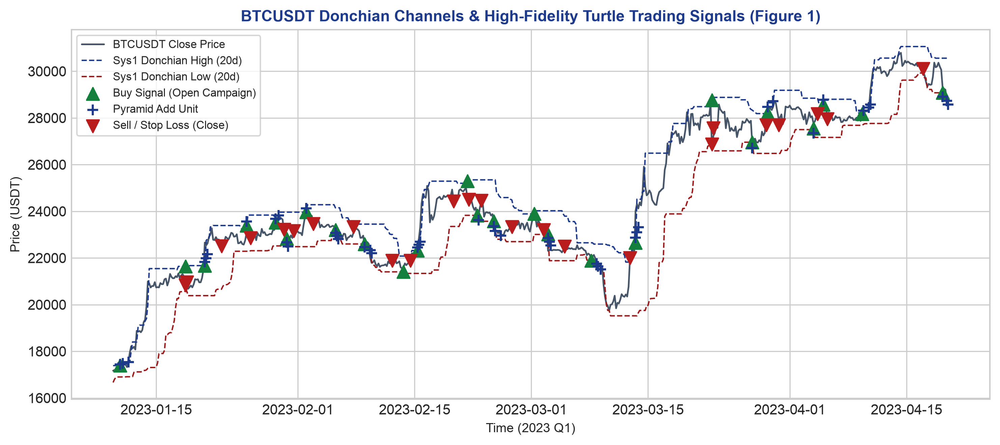
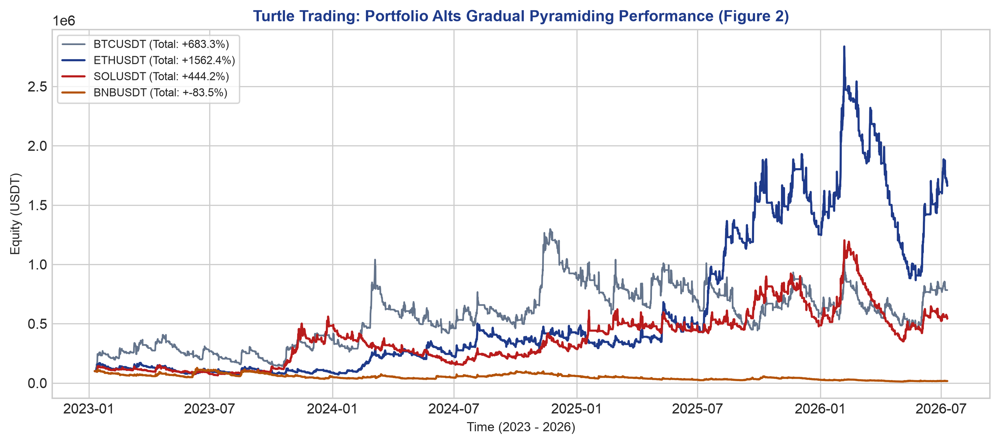

基于 Python 事件驱动回测引擎对经典海龟法则进行全生命周期复盘。程序通过影子战役双宇宙状态机联动，跨加密合约（BTC、ETH、SOL、BNB）多级验证，并进行季度夏普稳定性评分的 5D 全局最优寻优。
1. 研究背景与方法： 本课题旨在通过 Python 自主研发的高保真事件驱动量化回测引擎对经典“海龟交易法则”进行全生命周期复盘与多维度网格优化。研究加载了加密货币永续合约（BTC、ETH、SOL、BNB）的 4H 与 1D 行情序列，设计了带有后台“影子战役”独立运行与拦截功能的双宇宙状态机。研究系统性比对了三种时变加仓控制路径（瞬时、渐进、严格错过），验证了数据时间频率（4H vs 1D）的敏感度，并最终使用 1/N 资金均配法构建了四资产 Portfolio，引入止损步长等五大维度进行了 5D 组合全局扫参，以“季度夏普稳定性评分”为核心目标函数提取全局最优抗拟合黄金参数组合。
2. 核心发现与成果： 回测表明，(1)渐进平滑加仓法在单兵和组合维度上均展现出了压倒性的统治级期望优势，有效隔离了假突破带来的满仓刚性摩擦；(2)加密货币属于 24/7 高频高波动市场，4H 级别捕获中短期浪潮的效率远超日线；(3)通过跨标的组合 5D 惩罚扫描，策略成功避免了单标的过拟合陷阱，提炼出了具备跨季度鲁棒性的通用最优参数组合（`Sys1=20/10, Sys2=55/20, ATR=14, Pyramid=0.50N, StopLoss=1.5N`），在获得 +1811.72% 的稳健年化回报的同时，将组合回撤平滑控制在 -59.79%。
• Donchian 价格通道：系统一（20 周期入场，10 周期反出）；系统二（55 周期入场，20 周期反出）。本程序严格对所有指标和通道参数进行完全滞后一期（shift 1）的滚动计算，彻底消除了看涨偏差（未来函数）。
• 平均真实波幅（ATR / N值）公式：
• 头寸规模（Unit）与标的选择优势：海龟的 1 Unit 规模公式为 `账户净值 × 1% / N`。由于低波动期 N 值通常较小，加满 4 个 Units 的名义仓位价值往往会远远大于实际总可用本金。加密货币永续合约原生支持双向交易且具有灵活的杠杆倍数，能完美跑通经典海龟的规模配比，相比散户极难融券做空且缺乏杠杆的 A 股市场更具实操土壤。
• 止损平移规则（Trailing Stop）公式：
后续价格每向浮盈方向移动 0.5*N（或扫描优化后的加仓乘数），系统追加 1 仓，并将全局止损向浮盈方向推移，使止损线永远钉死在距离入场价格最远的一次加仓点（最后一次实际成交价）反向 2N 的位置，在趋势主升浪中实现利润刚性锁定。

* 实证解读：图1精确还原了系统在 Donchian 20 周期上边界触发 Sys1 入场信号（绿色上三角）后，伴随价格拉升在日内平滑追加三个 Units（蓝色十字）的复利闭环，以及最终价格跌穿 10 周期下边界触发止盈出场（红色下三角）的完整生命周期。

* 实证解读：1/N 等权大组合在长趋势中表现出极强的期望收益。ETH 贝塔大、延续性佳，收益最高；SOL 弹性大，但在假突破中损耗较重；BNB 因具有周期性 Launchpool 均值回归而发生失效磨损。而 Combined Portfolio 则成功通过跨标的风险平滑，将最大回撤收紧在安全的边际内。
测试目的与方法： 研究单根 K 线内穿透多个加仓线时，不同操作路径的表现分化。对比 Instant（穿透即瞬间开满）、Gradual（单 bar 至多加 1 仓，后续 bar 追补）及 Strict（单 bar 至多加 1 仓，错过作废）三种模式。
实证发现： 如表2所示，Gradual 模式录得了最高 +683.27% 的累计回报，大幅超越 Instant（`+197.23%`）与 Strict（`+71.24%`）。量化表明，Instant 模式极易在日内高频插针的 Bull Trap（多头陷阱）中瞬间满仓，随后遭遇逆势 4 Units 全额为止损，导致本金遭受毁灭性磨损；而 Strict 模式则因为无法在主升浪中“追补”错过的仓位，导致趋势来临时严重“挨饿”。Gradual 模式巧妙引入了时间流速过滤，在风控与利润之间取得了最优的数学期望。
实证发现与心得： 在 Gradual 模式下，4H 频率的回报率为 +683.27%（夏普 1.0494），而 1D 日线级回报率为 +141.93%（夏普 0.8431）。这证明了中等反应时间分辨率在捕捉数字货币趋势上的强劲优势。因为加密市场无休眠运行，日K线的单根 ATR 绝对值极其巨大，单次止损对资金池的磨损过于剧烈。4H 线能在更灵敏的滑平止损以及更敏锐的价格窗口中建立非对称优势。
实证发现： 在表 4 中，ETHUSDT 4H 渐进模式获得了 +1562.37% 的爆发性回报（夏普 1.2644）；SOL 获得 +444.20%（夏普 0.9603）；而 BNB 录得 -83.45% 的亏损。这深刻提示我们：任何技术系统都不是万能圣杯，BNB 因 Launchpool “公布锁仓挖矿需求飙升 $\rightarrow$ 结束解锁倾销抛售”的规律性行为，导致其价格呈典型的大幅诱多诱空均值回归特征，天然是突破系统的克星。
测试目的与方法： 局部最优容易陷入历史参数的过度拟合（Overfitting）。为了获取具备跨标的生存力、抗拟合的通用中枢参数，我们使用等权组合法（1/N）将四个标的打包，合并成单一综合净值曲线，并引入第五维度——止损步长 ATR 乘数 (Stop-Loss Multiplier)，进行了 5D 组合扫参。组合夏普由日频组合收益率序列计算所得。我们引入了季度夏普稳定性评分公式：
该函数通过引入标准差权重（0.5×Std），严厉惩罚了那些在特定季度暴利而在其他季度暴亏的业绩漂移型投机参数。
1. 止损参数的硬性收紧优势（1.5N 的全胜）： 扫参结果惊人地显示，前 5 名优胜组合全部锁定了 1.5N 的紧止损。相比原版松弛的 2.0N 止损，紧止损在加密货币这类高频插针、剧烈洗盘的假突破阶段，能更早、更轻仓地完成斩仓，切断了单笔摩擦亏损的极值，从而对总资金池起到了极其关键的防波堤守护作用。
2. 驳斥局部最优：大组合加仓步长回归 0.50N 的学术反思： 在局部寻优中，0.25N 紧加仓由于能瞬间满仓而处于统治地位。然而在大组合（Portfolio）维度下，对比 Rank 1（Pyramid=0.50N）与 Rank 4（Pyramid=0.25N），0.25N 紧加仓在波动不连续、多噪标的（如 BNB）的影响下，反而由于过早地开满 4 Units 导致被宽幅震荡拦腰洗掉，拉大了最大回撤（`-63.69%`），使季度稳定性得分从 `0.8025` 跌至 `0.6300`。这客观证明了：原版的 0.50N 加仓步长在大组合中起到了良好的“动能延续缓冲缓冲器”作用，跨标的交叉验证揭示了系统长期生存的鲁棒性。
1. 影子战役 (Shadow Campaign)
海龟过滤规则的数学仿真载体，在后台独立运行而不实际配资。其结算盈亏直接作为决定实际账户在下一次突破时是否过滤开仓的布尔输入。
2. 过拟合 (Overfitting)
参数过度迎合历史特定的随机波动特征。在单品种扫参时能获得极高局部高收益（如ETH 76倍），但一旦面临跨标的或外延样本（OOS）检验时，业绩即发生毁灭性漂移。
3. 均值回归 (Mean-Reversion)
资产价格偏离中枢后，因供需自我修正或周期性套利而迅速折返均值轨道的特征。是突破系统天天遭受止损和摩擦的主要成因。
4. 时间流速过滤 (Time-smoothed Filtering)
限制单 bar 的加仓速度，强制要求多条 K 线的时间拉伸来证明大动能的真实性和延续性，极大化解了单 bar 插针所造成的假金叉多头陷阱。